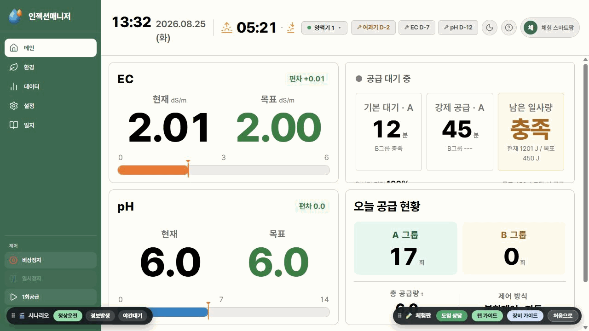
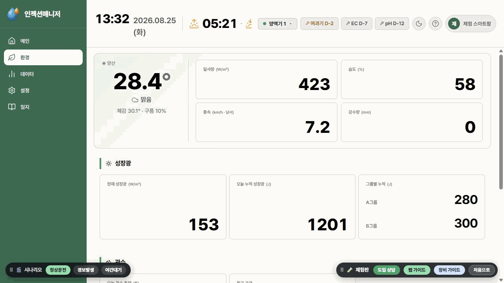
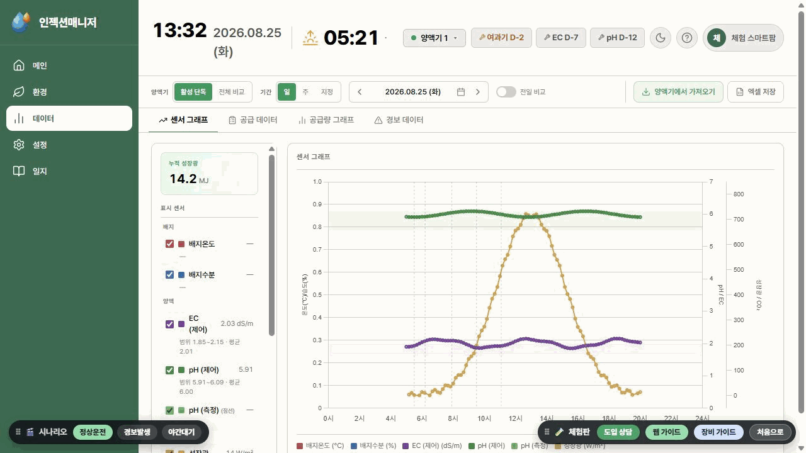
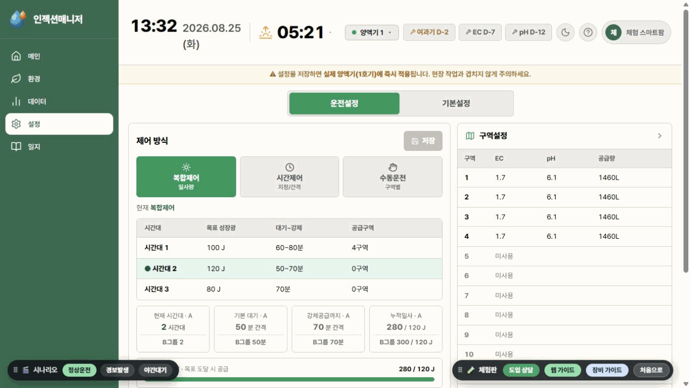
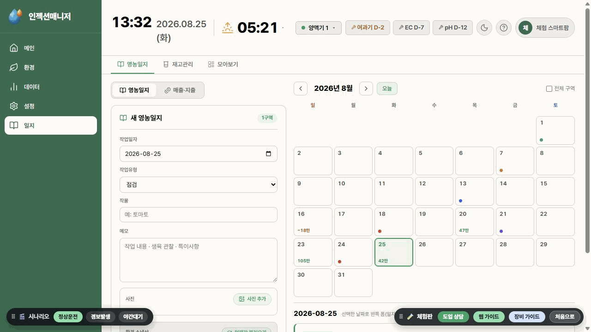

현장을 한눈에EC·pH·유량·공급 상태를 실시간 확인
인젝션 매니저INJECTION MANAGER
REMOTE MONITORING · CONTROL
양액공급기, 이제
양액공급기, 이제
언제 어디서나 웹·앱으로.
현장에서만 확인하던 양액기의 운전 상태와 재배 데이터를 사무실·집·이동 중에도 실시간으로 보고 제어합니다.
실시간 모니터링원격 운전·설정데이터·영농기록
어디서나 제어운전 방식과 구역별 설정을 원격 적용
기록을 자산으로센서·공급·경보·영농 데이터를 축적
SYSTEM OVERVIEW
현장 장비와 웹·앱을 하나로 연결합니다
양액기는 현장에서 공급을 계속하고, 서버 PC가 데이터를 안전하게 모아 웹·앱으로 전달합니다.
외부 원격 접속을 위한 인터넷 환경
PC와 양액기를 같은 네트워크로 연결
데이터 수집·로컬 저장·웹 전송
공급·센서·펌프를 현장에서 제어
운영 데이터 흐름양액기→현장 서버 PC→보안 인터넷 연결→웹 · 앱
ONE PLATFORM
모니터링부터 기록까지 한 화면에서
현장 운영에 필요한 기능을 다섯 개의 관리 화면으로 구성했습니다.
EC·pH 편차, 공급 구역, 잔여 양, 공급 횟수와 장비 상태를 실시간으로 확인합니다.
EC · pH · 유량 · 공급률날씨, 일사량, 습도, 성장광, 관수 이력과 서버·센서 통신 상태를 확인합니다.
기상 · 성장광 · 관수 · 통신기간별 센서·공급·경보 데이터를 그래프로 비교하고 필요한 자료를 엑셀로 저장합니다.
그래프 · 전일 비교 · 엑셀복합·일사량·시간·수동 제어와 구역별 EC·pH·공급량을 설정합니다.
복합제어 · 구역설정 · 1회공급작업 내용과 사진, 당시 환경값, 재고 및 매출·지출 내역을 함께 기록합니다.
작업 · 환경 스냅샷 · 경영기록ACTUAL DEMO SCREENS
인젝션 매니저 실제 화면
체험판에서 직접 확인할 수 있는 주요 관리 화면입니다.





※ 위 이미지는 실제 장비가 아닌 체험판 목업 데이터로 구성된 예시 화면입니다.
LOCAL FIRST
인터넷이 끊겨도 현장 운전과 저장은 계속됩니다
양액기와 서버 PC는 현장 네트워크에서 직접 통신합니다. 외부 접속이 일시적으로 중단되어도 현장 제어와 로컬 데이터 저장은 유지됩니다.
LIVE DEMO
데모 체험 화면으로 이동 ↗인젝션 매니저 데모 체험
별도 장비 없이 체험판 데이터로 메인·환경·데이터·설정·일지 화면과 주요 동작을 직접 확인할 수 있습니다.
demo.woosunghitec.kr